桶のメダカを屋内の水槽に移動しました。
2023/12/03
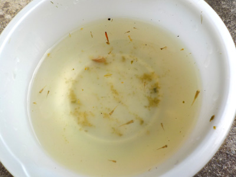
夏だったら夕方にエサをあげれていたんですが、日が短くなってからはエサもあげずに放置していました。
そのせいがメダカの数が減ってて、12匹になっていました。
面倒がみやすい屋内の水槽に移動しました。小さいので、親に食べられないかちょっと心配です。
2023/12/03

夏だったら夕方にエサをあげれていたんですが、日が短くなってからはエサもあげずに放置していました。
そのせいがメダカの数が減ってて、12匹になっていました。
面倒がみやすい屋内の水槽に移動しました。小さいので、親に食べられないかちょっと心配です。
2023/10/08
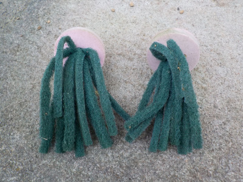
メダカのオケに入っていた産卵床が、外に投げ出されていました。
オケの水も三分の一くらい減っていました。
こんなことをするのはカラスかな？
寒くなってきたし子供のメダカも増えたので、もう産卵床は使うのはやめます。
2023/09/24
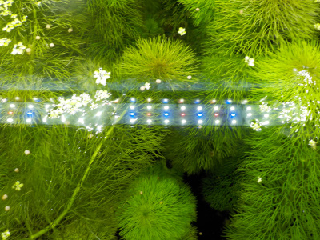
気温が丁度いいみたいで、水草がすくすく伸びてます。
水草が増えるのはいいんですが、だんだん植える場所がなくなってきました。
でも、もうちょっと寒くなったら枯れるかな？
2023/09/03
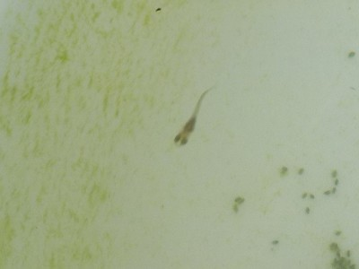
メダカは狂暴で小さい魚を食べるようなので、少し育った個体を卵から離すことにしました。
何匹もいるなかから大きい稚魚を狙ってすくうのは面倒で時間がかかりました。
今日はは5匹だけ引越ししました。
2023/08/26
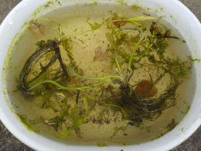
6月に採取した時は育ったので、今回も同じように育つかと思ったんですがダメでした。
日照時間が減ったせいか、夏の暑さのせいか、それとも他に要員があるのか分かりませんがどんどん溶けて小さくなっています。
今回の水草はあきらめようと思います。
2023/08/13
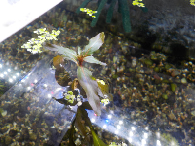
田んぼで採取した水草がすくすく伸びて、水面から出ました。
切り戻しして、カットした部分は水槽内に植えました。
成長して増えるのはいいですが、冬になったら枯れるんだよな。
2023/08/10
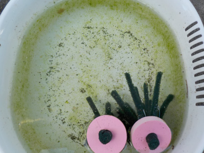
小さ過ぎて写真に撮れないですが、小さいのが5匹くらい泳いでました。
卵を親から離すだけで簡単に増えるもんなんですね。
2023/08/01
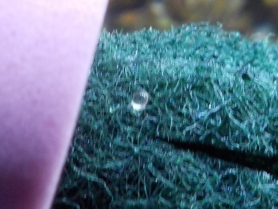
産卵床をクルクル回して卵を発見しました。
なれればどうってことないかもしれないですが、いちいち見るの面倒ですね。なので次からは見ないことにしました。
卵があろうがなかろうが、定期的に取り出して稚魚用の桶に移動することにします。
2023/07/26
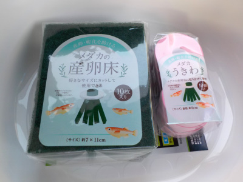
メダカを飼っていれば普通に卵を産んで、それが育って数が増えると思っていましたが増えてないです。
親っていうか大きいメダカが、卵か稚魚を食べている可能性が高いです。
自然繁殖して欲しかったですが無理みたいなので、産卵床と稚魚を育てる用の洗い桶をセリアで買いました。
3点で合計330円で手に入るのはお手軽でいいですね。
今日水槽に産卵床を設置しました。雌のお腹にぶら下がっている卵はいつ付くんだろう？
2023/07/25
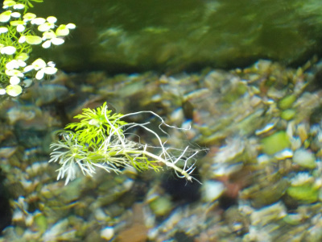
水草を洗って水換えも何回かしてから水槽に入れたんですが、洗いきれてないものですね。
キクモが混じって成長していました。キクモは欲しかったのでうれしいです。
もうちょっと大きくなったら水槽の砂に植えようと思っています。
2023/07/23
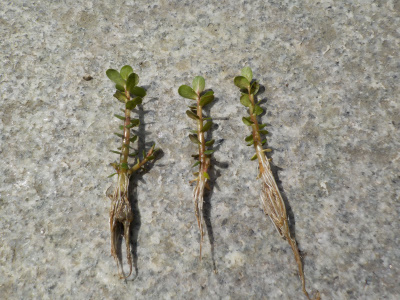
キカシグサです。小さい葉っぱが可愛いですね。これが大きく育ったら稚魚の隠れ家になりそう。
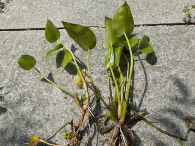
コナギです。大きいので水槽にはたぶん入れないです。屋外の桶の日よけにいいかなと思います。
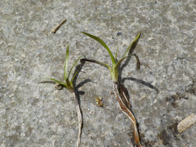
コナギの小さいものです。これくらい小さいと水槽に植えれるかな？冬に枯れるまで水を浄化してくれそうな感じがします。
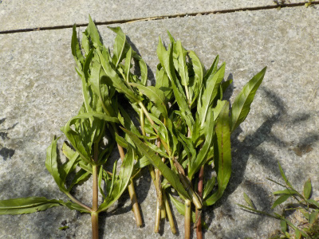
ヤナギタデかな？これは水中で育つのかな？やってみないと分からないです。
今回採取したものはみんな1年草っぽいので、冬に多分枯れます。
熱帯魚だと年中緑が茂っていて欲しいと思いますが、メダカは冬は草が枯れた方が季節感があっていいですね。
2023/07/02
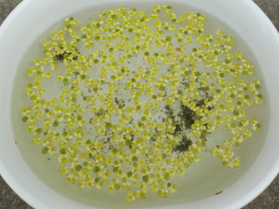
全体的にコケが生えて緑色になってた洗い桶にタニシを入れました。
期待した通りに苔を食べてくれて、洗い桶が綺麗になりました。
2023/06/25
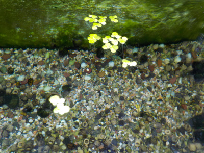
田んぼで採取した水草を水槽に入れました。
全部入れると水槽内が暗くなると思ったので少な目です。
LEDライトの光量で成長できるかな?
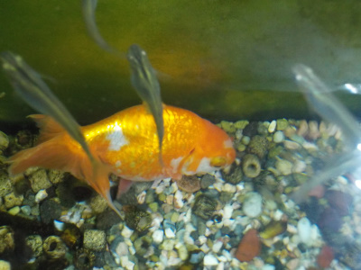
我が家のメダカはどうも雌が2匹しかいないようです。現在卵をくっつけて泳いでいますが、それが生まれて育たないと絶滅です。
メダカの寿命を考えると絶滅の危機はすぐそこにあります。
2023/06/22
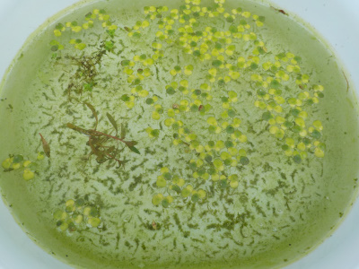
12日放置していたら、洗い桶の中が緑色になっていました。
浮き草は分裂して凄いスピードで増殖しますね。
2023/06/10
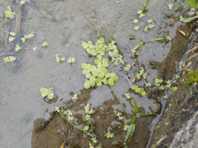
川で捕ったメダカにペットショップの水草とかグッズを使うより、自然のものを使いたいと思ったので採取に行きました。
近くの水路は雑草は茂っているけど、水草っぽいものがなかったです。
田んぼにはそれっぽいのがありました。
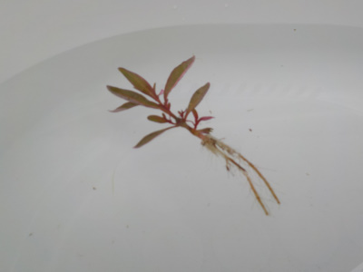
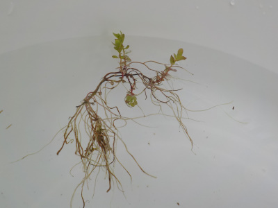
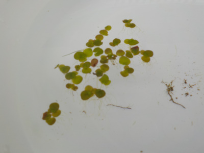
3種類です。浮き草はたぶん使えますね。残り2つはどうなるかな？
I have killifish in Izumo, Japan.